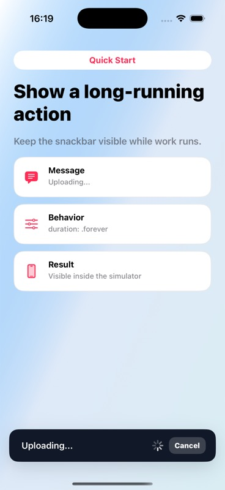

Quick Start
Show a long-running action
Keep the snackbar visible while background work is running.
Code
let snackbar = TTGSnackbar(
message: "Uploading...",
duration: .forever
)
snackbar.style = .loading
snackbar.actionText = "Cancel"
snackbar.actionBlock = { snackbar in
cancelUpload()
snackbar.dismiss()
}
snackbar.show()
